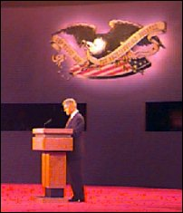

Here's a list of issue areas that were raised in
tonight's debate and the real Clinton/Gore record.
(Click on each issue for the full record).
Keeping Campaign
Promises
Best Economy in 30
Years
California
Dole Medicare
Cuts
Tobacco
Defense Budget
Pardons
Illegal Immigrants and
Benefits
Drugs
Manufacturing
Jobs
Welfare
Education
|
 |
John Ruda — Dudley,
MA
“Clinton has performed well in each debate and has
given himself a well-deserved backing from the American
people”
Scott Precher — Manhattan Beach,
CA
“...I felt an incredible amount of integrity after that
moment and also sensed a President who really cared
about us ... the American people.”
Julie Reid — Capo Beach, CA
“I think you did a terrific job tonight and elevated
the debate...”
Matthew Eason — Rockville, MD
“I feel he has a better plan for the future and a
better understanding of what young people want in the
future...”
Dharm Guruswamy — Atlanta, GA
“Clinton fits well on the world stage which will be
important as the next President will lead American
foreign affairs into the next century...”
Pam Kirby — Russellville, KY
“He focused on the issues relating to our future and
solving problems that now face us.”
Dennis Bubla — San Antonio, TX
“He has done more for our country than any president I
have come to remember.”
Scott Forbes — Baraboo, WI
“It is wonderful to have a President who is a voice for
unity AND is a statesman after all these years.”
Alan Hall — Birmingham, AL
“President Clinton offers a vision to restore the
American dream and to bring people together.”
Suzanne Gomez — Martinez, CA
“I and my family are ready to cross that bridge to the
21st century with Clinton/Gore.”
Mark Solomon — Ames, IA
“The President is a man of character and commitment. As
a new citizen of the United States, it will be a
pleasure to cast my FIRST ever vote for Clinton/Gore.”
Rick Snyder — Shelburne, VT
“The President is to be commended for keeping his focus
in the debates on the issues.”
|